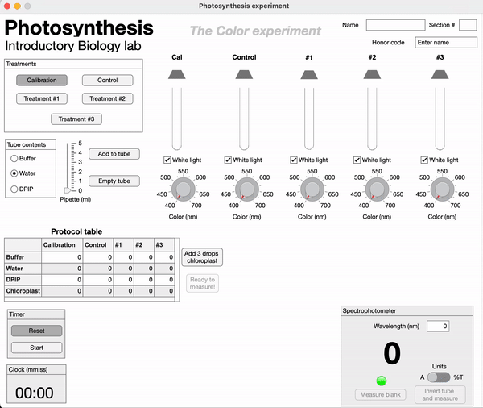
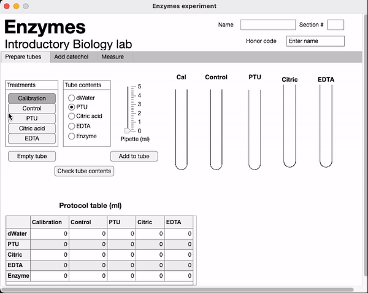
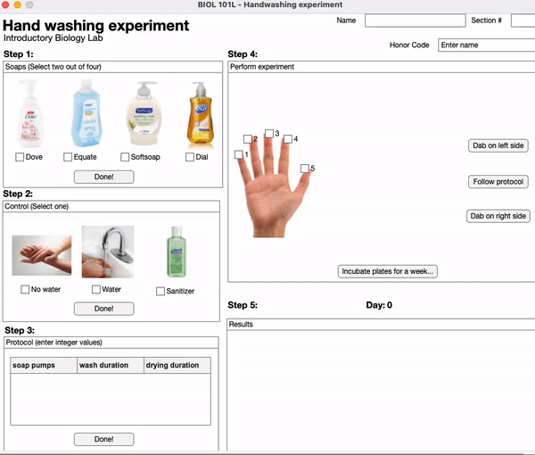
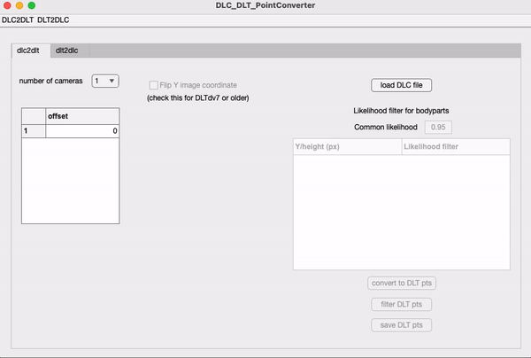

Teaching apps
Apps to learn interactively during remote teaching. The pandemic has
presented unique challenges when it comes to teaching, especially lab courses.
Students miss out on potentially the most important aspects of a lab course -
interacting directly with the natural phenomena, investigating using scientific
data collection techniques, and validating theories and laws studied in lectures with their observations.
To partially circumvent this issue, I created a suite of
apps that allow undergraduate students to setup and perform experiments tailored
for the Introductory BIOL 101 lab course ranging from
photosynthesis to gel electrophoresis. These apps are used regularly by undergraduate
students at UNC Chapel Hill during the BIOL 101 laboratory course.
effect of light color on photosynthesis

Students investigate the role of wavelength of light on photosynthesis. The simulation
allows students to use a virtual spectrophotometer to measure the rate of
photosynthesis.
role of cofactors in enzyme function

Students understand the role of cofactors in enzyme function by
using chelating agents to inhibit
certain cofactos from binding to the enzyme.

Students setup a gel including loading the wells with DNA samples, attaching carbon
electrodes, and running the gel. The final result is observed under UV light.

A fun way to understand
and formulate steps of a complete experiment (i.e., setting up hypothesis, protocol,
data collection and interpretration) by testing the effectiveness of various handwashing soaps
research apps
Apps to facilitate kinematic data collection and analysis. These apps are often complemented
with command line functions that allow extracting 3D position data from recorded videos.
switching between DLC and DLT

DeepLabCut and DLTdv are quite common tools used for tracking and extracting position/
kinematic data from recorded videos. This app allows using tracked data in DLT as training
data in DLC. Furthermore, the tracked data in DLC can be converted to DLT file format for
easy visualization.
morphometric measurements
Quick calibration and extraction of various morphometric measurements of interest from
a 2D image. Same measurements can be performed by multiple users and the app averages
the measurements as the final output.